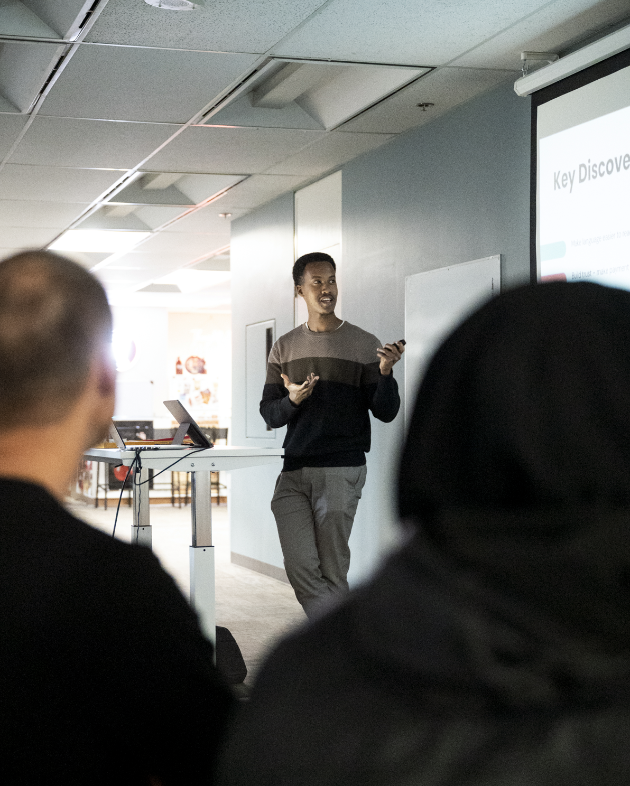
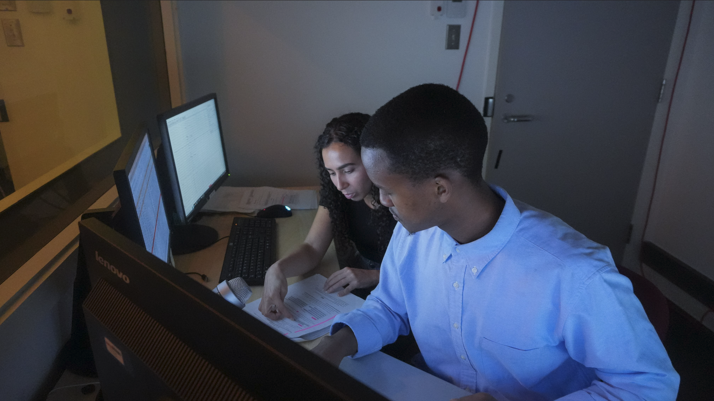

Open to UX research, Research Operations & AI design roles
I research and design how people interact with AI systems.
A data-driven, human-centered user researcher helping you personalize and integrate responsible AI — and design better systems.
MontréalM.Sc. User Experience, HEC MontréalCAPM
Good research saves you time reducing the risk of overspend on rebuilds.
I'm a human-centred UX researcher with three years of experience across government, nonprofit, and private sectors.
I have a certificate in Project Management (CAPM), a master's degree in UX with a background in neuroscience and human-centred AI.
IMAGEimages/uk-presenting.png

Presenting inclusive research report and running workshopIMAGEimages/uk-observation.png

Moderating a live research study from the observation room
I leverage a full spectrum of qualitative and quantitative methods, bridging behavioural, self-reported, and physiological data to inform design decisions. I'm interested in designing accessible and responsible AI systems that drive business goals and solve real human problems.
See some of my work below, starting with my master's thesis research project at HEC Montréal's Tech3Lab, Canada's largest UX Research Lab, where we used state-of-the-art tools, like EEG and pupillometry, to study the differences in how people learn from AI tutors.
Conversation DesignHuman–AI InteractionApplied Research
How important is an AI tutor's communication style in the learner's experience?
Role Lead researcherLab Tech3Lab, HEC MontréalPeriod 2024–2026Method EEG · Pupillometry · Behavioural · 40 participants
The problem
AI tutors are being adopted faster than anyone has measured their effect on the learner. I wanted to know whether adapting the tutor's persona to respond to the user's preferred learning style would change how users learn math. We wanted to know whether there was a change in the user's subjective, lived, and measured experience when comparing a personalized AI tutor with a non-personalized one.
What I did
Through prompt engineering, I built tutors that adapted their delivery to each learner: more concrete and example-driven for some, more abstract and pattern-focused for others, mapped to Felder-Silverman learner profiles and written entirely into the system prompt. That choice matters for industry: Manipulating the system prompt costs nothing. Forty participants worked through a fully user-led AI-tutored math session on Venn diagrams, logarithms, and parabolas followed by a post-tutoring quiz. We recorded interaction logs, subjective measures (using validated scales), pupillometry, and EEG.
What changed
The quiz scores did not see any change across treatment conditions; however, the physiological data did see some significant results. Pupil dilation during tutoring was significantly lower with the personalized tutor, suggesting that learners processed the same material with lower cognitive load, as corroborated by the EEG results. They also engaged more, skipping fewer quiz questions and writing out more notation while working with the AI. Although test scores (outcome measures) remained untouched, the underlying interaction experience may have been influenced by the personalization of tutoring. For anyone building EdTech: a more personalized experience can make a difference, and if you only measure outcomes, you miss most of what happens (the cognitive efficiency gains). Our work was presented and published at the Florida AI Research Society's (FLAIRS) annual Conference.
Responsible AI use in Government: training and advocacy.
Role UX design & researchClient Employment and Social Development CanadaPeriod 2024–presentMethod Internal interviews & surveys with team members
The problem
ESDC was adopting AI tools faster than its people could use them well. The Workplace Mental Health (WMH) team wanted to make AI that could help public servants locate mental health services and programs much faster, without creating new risks or confusion in a sensitive domain. They also wanted to find ways to improve their own outputs using AI within the WMH team but were unsure how.
What I did
I fine-tuned and tested a retrieval-augmented generation (RAG) system intended for broad internal use to improve access to mental health resources. I designed personalized, agentic solutions to increase productivity and wrote AI training resources and reference guides to help colleagues use the tools. I consulted on AI implementation strategy aligned with the 13 psychological factors of a healthy workplace at ESDC action group meetings.
What changed
The team moved from ad-hoc experimentation to a documented practice. I built a toolkit of resources and reference guides to democratize AI knowledge and provide a starting point for using agents. Examples and use cases were framed around real tasks.
UX ResearchResearch OperationsNot-for-profit & Public Sector
Digital equity and inclusive design starts with inclusive research practices.
Role Project lead, research operationsPartner IncluCity × City of CalgaryPeriod 2023–2024Scale 7 services · 4 equity groups · 35 participants
The problem
The City of Calgary digital team had tested its digital services for years, but previous testers were not the people most affected when those services failed. Newcomers, older adults, and people with disabilities using assistive technology were largely absent from the design loop. Our job at IncluCity was to support the city's efforts to recruit underrepresented groups for testing.
What I did
As the program manager, I led recruitment, project management, and volunteer coordination across roughly 20 researchers between the two teams, with a target of four equity groups and eight participants each. Recruiting participants with disabilities broke the original plan: none of our 600+ existing testers matched the full criteria. I put three changes in place, a referral program with incentives that opened snowball recruitment, removal of a screening rule that filtered out eligible people, and high-touch onboarding for testers who weren't answering email.
What changed
The pilot mapped 18 distinct equity challenges across seven services. Three city service teams adopted the findings (Recreation, myID, Parks), a follow-up study on people with disabilities was approved, and mobile-plus-desktop testing for the same audience became standard.
Finding the one button that broke an insurance quote flow.
Role UX researcher (4-person team)Client Beneva, with HEC Montréal UX LabPeriod 2025Scale 2 products · 4 scenarios · 12 participants
The problem
Beneva, one of Canada's largest mutual insurers, wanted to know whether real users could complete home and car quotes as smoothly as competitors advertised, and explore why users may not complete the full quote process.
What I did
I was the study design and quantitative research specialist on this research team. We recruited 12 participants who had shopped for insurance in the past year. We evaluated both home and auto flows by separating them into two parts, making four task scenarios. We ran a mixed-methods observational study measuring scale items such as satisfaction and behavioural and system measures such as effectiveness and efficiency, which we benchmarked against competitors. Each section finished with a qualitative interview.
What changed
The home-quote edit flow broke the study: six of twelve participants failed it because the price card still read $0.00 and they never noticed the Recalculate button at the top of the page. We flagged it as the lead usability catastrophe and delivered eight prioritized fixes with severity ratings the product team could act on. I cannot openly discuss the results of this study; however, I can refer broadly to the methods and outcomes in an interview if contacted.